内容要点
[种草R]家人们👋，我是东哥，今儿带大家解锁 LR 里超牛的 “颜色” 工具！打开 LR 的 “编辑”，再点 “颜色”，一堆调色法宝就出现啦。 [种草R]这里有 “黑白”“分级”“混合”，下面一行是 “白平衡”“原照设置” （点开旁边下箭头，还有 “自动”“自定义”），再右边有个 “吸管” 图标，最下面还有 “色温”“色调”“自然饱和度” 和 “饱和度”（图2）。 [向右R]“黑白” 很简单，一点照片就变黑白了。“分级” 和 “混合” 咱之后再聊。 [向右R]先讲讲关键的 “白平衡”。 [种草R]白平衡，就是相机等设备在不同光线条件下，把白色物体还原成白色的功能，靠调整色温、色调参数，让画面色彩自然准确。 [种草R]比如白色柜门，开白光时是白色，开暖光受光线影响就变黄了（图3、图4），这时通过调整色温、色调，就能把柜门变回白色，其他颜色被光线影响变色，也能这样还原。 [向右R]下面讲讲工具用法。 [一R]“原照设置” 就是照片原本的样子，调整后点它可还原。 [二R]“自动” 是 APP 分析照片后，自动调色温、色调，比如把图 4点 “自动”，立马变白，参
知识结构
[种草R]家人们👋，我是东哥，今儿带大家解锁 LR 里超牛的 “颜色” 工具！打
[种草R]家人们👋，我是东哥，今儿带大家解锁 LR 里超牛的 “颜色” 工具！打
[种草R]家人们👋，我是东哥，今儿带大家解锁 LR 里超牛的 “颜色” 工具！打
[种草R]家人们👋，我是东哥，今儿带大家解锁 LR 里超牛的 “颜色” 工具！打
- [种草R]家人们👋，我是东哥，今儿带大家解锁 LR 里超牛的 “颜色” 工具！打开 LR 的 “编辑”，再点 “颜色”，一堆调色法宝就出现啦。 [种草R]这里有 “黑白”“分级”“混合”，下面一行是 “白平衡”“原照设置” （点开旁边下箭头，还有 “自动”“自定义”），再右边有个 “吸管” 图标，最下面还有 “色温”“色调”“自然饱和度” 和 “饱和度”（图2）。 [向右R]“黑白” 很简单，一点照片就变黑白了。“分级” 和 “混合” 咱之后再聊。 [向右R]先讲讲关键的 “白平衡”。 [种草R]白平衡，就是相机等设备在不同光线条件下，把白色物体还原成白色的功能，靠调整色温、色调参数，让画面色彩自然准确。 [种草R]比如白色柜门，开白光时是白色，开暖光受光线影响就变黄了（图3、图4），这时通过调整色温、色调，就能把柜门变回白色，其他颜色被光线影响变色，也能这样还原。 [向右R]下面讲讲工具用法。 [一R]“原照设置” 就是照片原本的样子，调整后点它可还原。 [二R]“自动” 是 APP 分析照片后，自动调色温、色调，比如把图 4点 “自动”，立马变白，参
[种草R]家人们👋，我是东哥，今儿带大家解锁 LR 里超牛的 “颜色” 工具！打开 LR 的 “编辑”，再点 “颜色”，一堆调色法宝就出现啦。 [种草R]这
1/16–4/16封面/要点：[种草R]家人们👋，我是东哥，今儿带
[种草R]家人们👋，我是东哥，今儿带大家解锁 LR 里超牛的 “颜色” 工具！打开 LR 的 “编辑”，再点 “颜色”，一堆调色法宝就出现啦。 [种草R]这里有 “黑白”“分级”“混合”，下面一行是 “白平衡”“原照设置” （点开旁边下箭头，还有 “自动”“自定义”），再右边有个 “吸管” 图标，最下面还有 “色温”“色调”“自然饱和度” 和 “饱和度”（图2）。 [向右R]“黑白” 很简单，一点照片就变黑白了。“分级” 和 “混合” 咱之后再聊。 [向右R]先讲讲关键的 “白平衡”。 [种草R]白平衡，就是相机等设备在不同光线条件下，把白色物体还原成白色的功能，靠调整色温、色调参数，让画面色彩自然准确。 [种草R]比如白色柜门，开白光时是白色，开暖光受光线影响就变黄了（图3、图4），这时通过调整色温、色调，就能把柜门变回白色，其他颜色被光线影响变色，也能这样还原。 [向右R]下面讲讲工具用法。 [一R]“原照设置” 就是照片原本的样子，调整后点它可还原。 [二R]“自动” 是 APP 分析照片后，自动调色温、色调，比如把图 4点 “自动”，立马变白，参
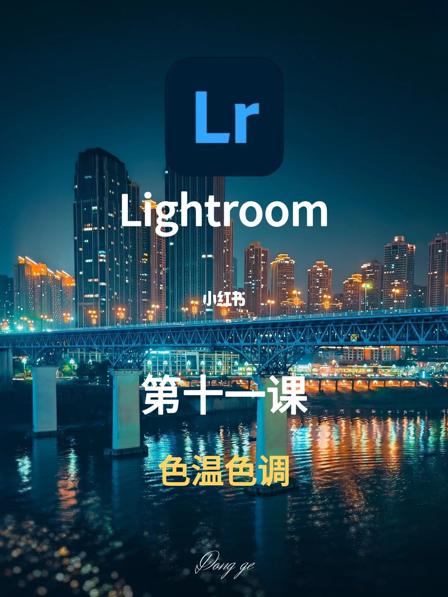
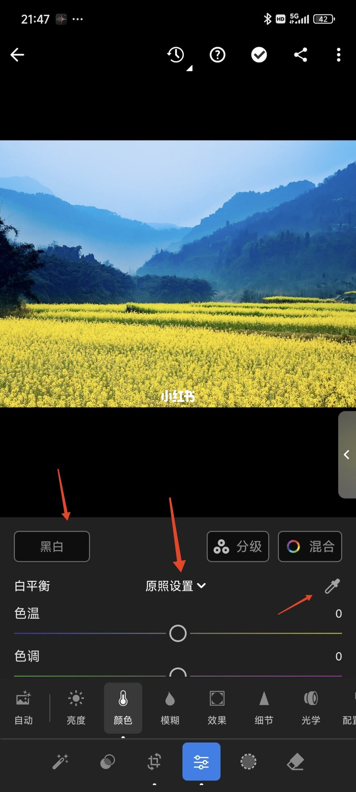
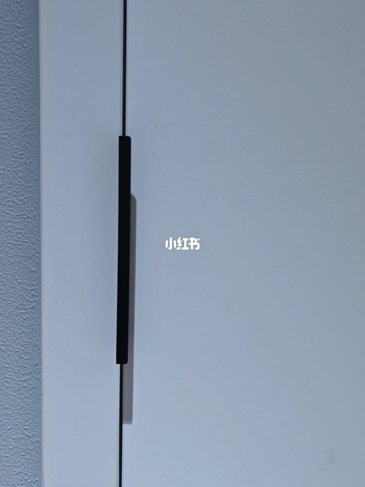
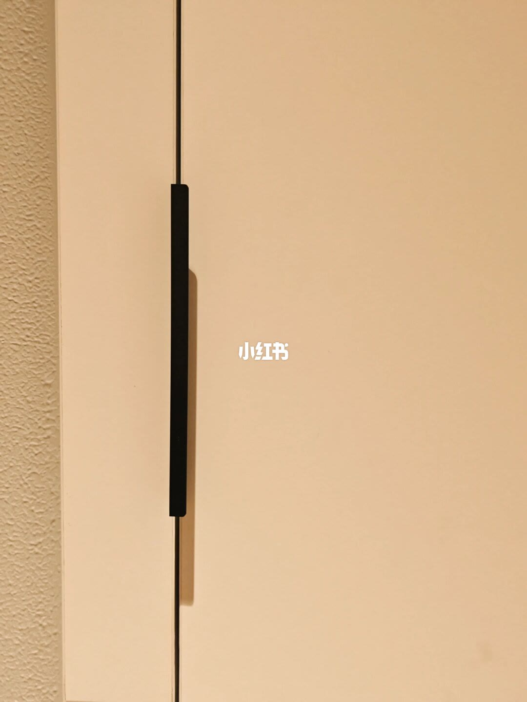
5/16–8/16第5/16页：LR 修图干货 | 手把手教你拿捏
[种草R]家人们👋，我是东哥，今儿带大家解锁 LR 里超牛的 “颜色” 工具！打开 LR 的 “编辑”，再点 “颜色”，一堆调色法宝就出现啦。 [种草R]这里有 “黑白”“分级”“混合”，下面一行是 “白平衡”“原照设置” （点开旁边下箭头，还有 “自动”“自定义”），再右边有个 “吸管” 图标，最下面还有 “色温”“色调”“自然饱和度” 和 “饱和度”（图2）。 [向右R]“黑白” 很简单，一点照片就变黑白了。“分级” 和 “混合” 咱之后再聊。 [向右R]先讲讲关键的 “白平衡”。 [种草R]白平衡，就是相机等设备在不同光线条件下，把白色物体还原成白色的功能，靠调整色温、色调参数，让画面色彩自然准确。 [种草R]比如白色柜门，开白光时是白色，开暖光受光线影响就变黄了（图3、图4），这时通过调整色温、色调，就能把柜门变回白色，其他颜色被光线影响变色，也能这样还原。 [向右R]下面讲讲工具用法。 [一R]“原照设置” 就是照片原本的样子，调整后点它可还原。 [二R]“自动” 是 APP 分析照片后，自动调色温、色调，比如把图 4点 “自动”，立马变白，参
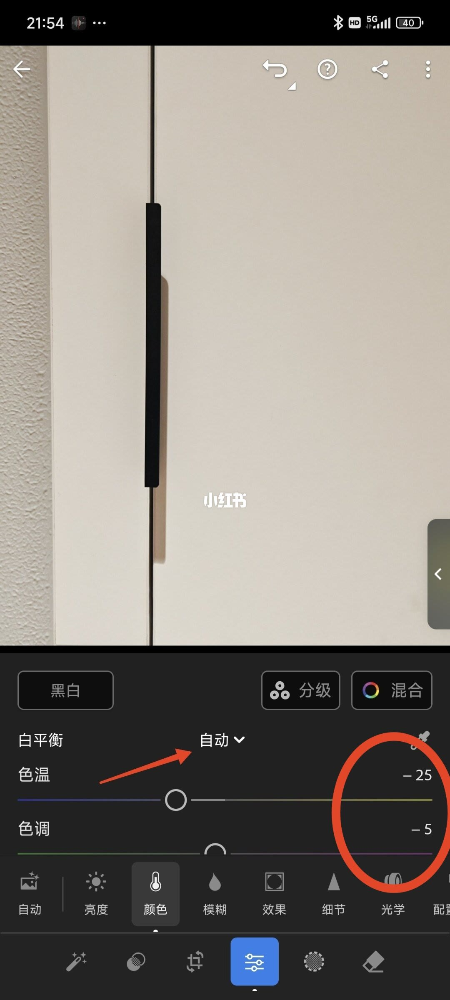
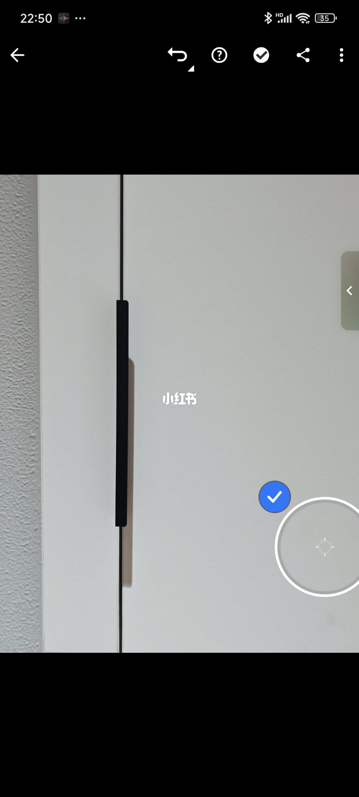
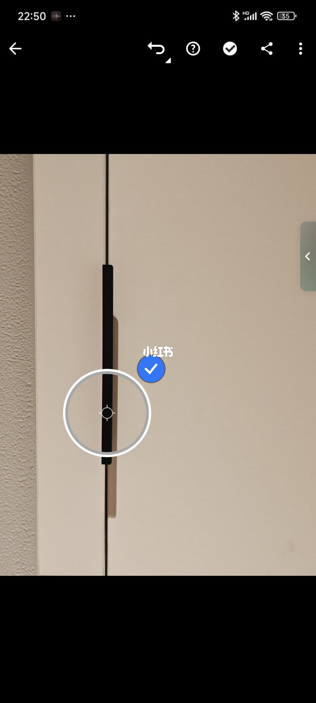
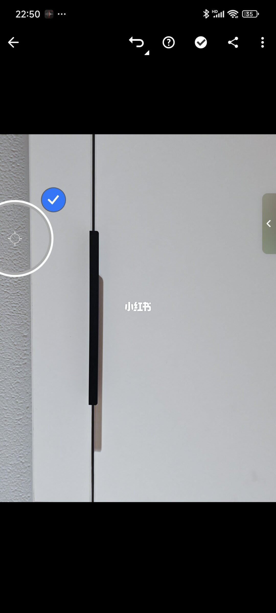
9/16–12/16第9/16页：LR 修图干货 | 手把手教你拿捏
[种草R]家人们👋，我是东哥，今儿带大家解锁 LR 里超牛的 “颜色” 工具！打开 LR 的 “编辑”，再点 “颜色”，一堆调色法宝就出现啦。 [种草R]这里有 “黑白”“分级”“混合”，下面一行是 “白平衡”“原照设置” （点开旁边下箭头，还有 “自动”“自定义”），再右边有个 “吸管” 图标，最下面还有 “色温”“色调”“自然饱和度” 和 “饱和度”（图2）。 [向右R]“黑白” 很简单，一点照片就变黑白了。“分级” 和 “混合” 咱之后再聊。 [向右R]先讲讲关键的 “白平衡”。 [种草R]白平衡，就是相机等设备在不同光线条件下，把白色物体还原成白色的功能，靠调整色温、色调参数，让画面色彩自然准确。 [种草R]比如白色柜门，开白光时是白色，开暖光受光线影响就变黄了（图3、图4），这时通过调整色温、色调，就能把柜门变回白色，其他颜色被光线影响变色，也能这样还原。 [向右R]下面讲讲工具用法。 [一R]“原照设置” 就是照片原本的样子，调整后点它可还原。 [二R]“自动” 是 APP 分析照片后，自动调色温、色调，比如把图 4点 “自动”，立马变白，参
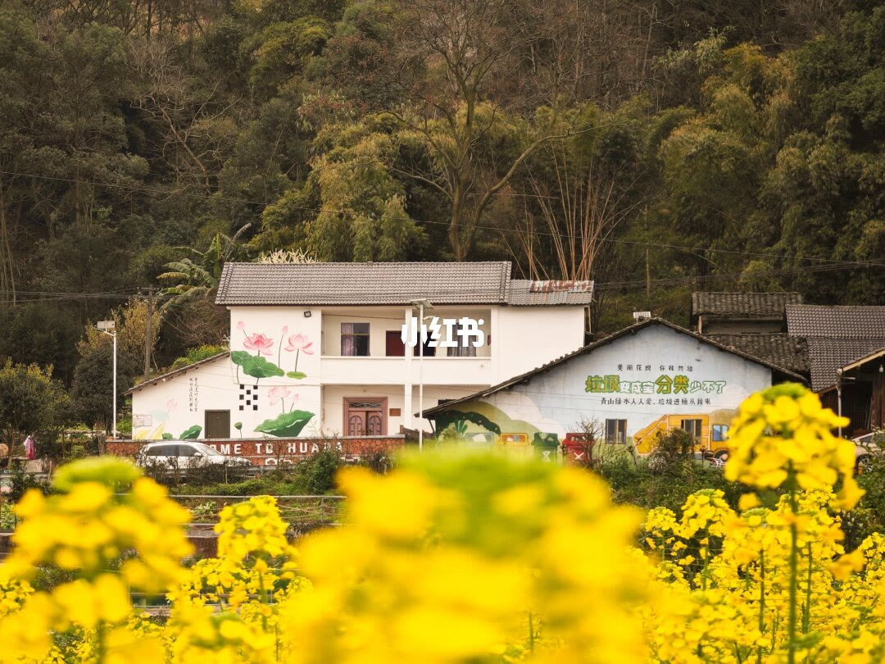
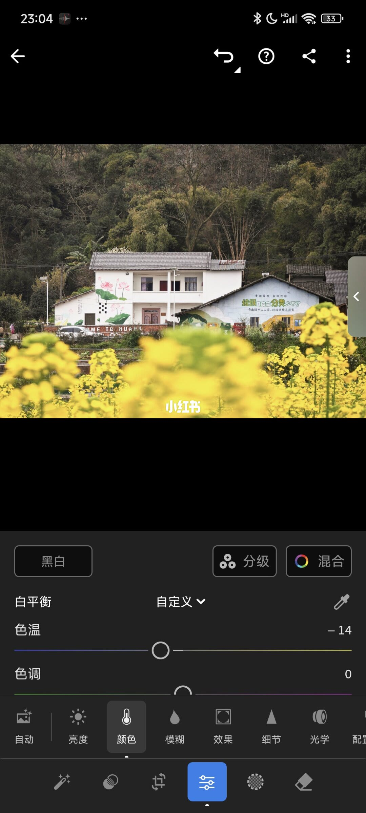
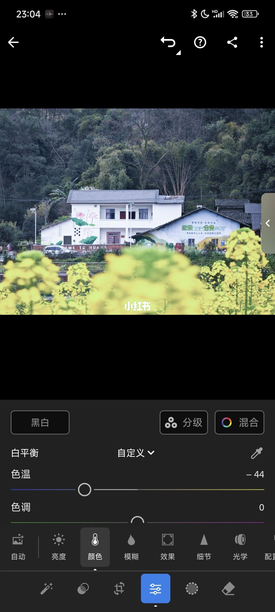
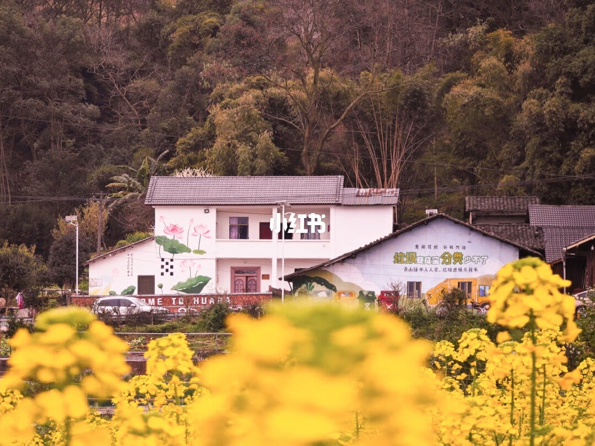
13/16–16/16第13/16页：LR 修图干货 | 手把手教你拿
[种草R]家人们👋，我是东哥，今儿带大家解锁 LR 里超牛的 “颜色” 工具！打开 LR 的 “编辑”，再点 “颜色”，一堆调色法宝就出现啦。 [种草R]这里有 “黑白”“分级”“混合”，下面一行是 “白平衡”“原照设置” （点开旁边下箭头，还有 “自动”“自定义”），再右边有个 “吸管” 图标，最下面还有 “色温”“色调”“自然饱和度” 和 “饱和度”（图2）。 [向右R]“黑白” 很简单，一点照片就变黑白了。“分级” 和 “混合” 咱之后再聊。 [向右R]先讲讲关键的 “白平衡”。 [种草R]白平衡，就是相机等设备在不同光线条件下，把白色物体还原成白色的功能，靠调整色温、色调参数，让画面色彩自然准确。 [种草R]比如白色柜门，开白光时是白色，开暖光受光线影响就变黄了（图3、图4），这时通过调整色温、色调，就能把柜门变回白色，其他颜色被光线影响变色，也能这样还原。 [向右R]下面讲讲工具用法。 [一R]“原照设置” 就是照片原本的样子，调整后点它可还原。 [二R]“自动” 是 APP 分析照片后，自动调色温、色调，比如把图 4点 “自动”，立马变白，参
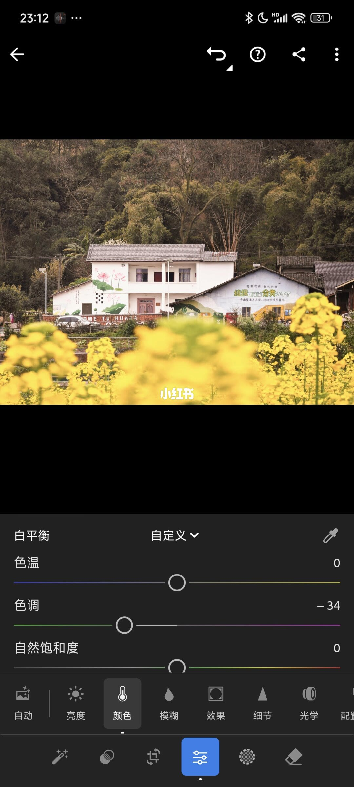
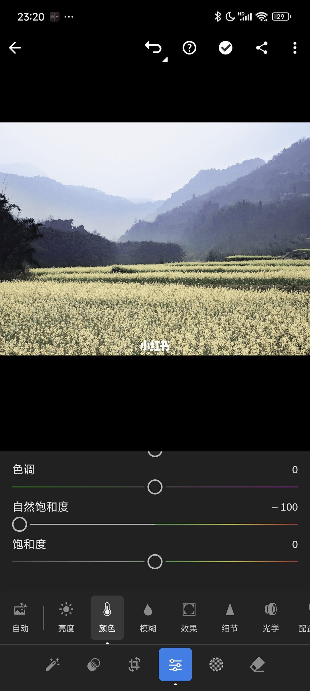
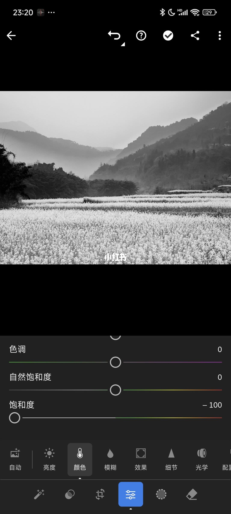
口述/画面要点（16段）
结合 Whisper medium 与画面大字整理；专有名词已校对。
封面/要点：[种草R]家人们👋，我是东哥，今儿带大家解锁 LR 里超牛的 “颜色” 工具！打
第2/16页：LR 修图干货 | 手把手教你拿捏色彩密码
第3/16页：LR 修图干货 | 手把手教你拿捏色彩密码
第4/16页：LR 修图干货 | 手把手教你拿捏色彩密码
第5/16页：LR 修图干货 | 手把手教你拿捏色彩密码
第6/16页：LR 修图干货 | 手把手教你拿捏色彩密码
第7/16页：LR 修图干货 | 手把手教你拿捏色彩密码
第8/16页：LR 修图干货 | 手把手教你拿捏色彩密码
第9/16页：LR 修图干货 | 手把手教你拿捏色彩密码
第10/16页：LR 修图干货 | 手把手教你拿捏色彩密码
第11/16页：LR 修图干货 | 手把手教你拿捏色彩密码
第12/16页：LR 修图干货 | 手把手教你拿捏色彩密码
第13/16页：LR 修图干货 | 手把手教你拿捏色彩密码
第14/16页：LR 修图干货 | 手把手教你拿捏色彩密码
第15/16页：LR 修图干货 | 手把手教你拿捏色彩密码
第16/16页：LR 修图干货 | 手把手教你拿捏色彩密码